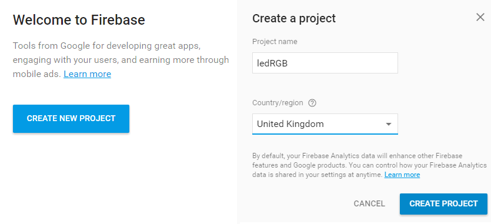
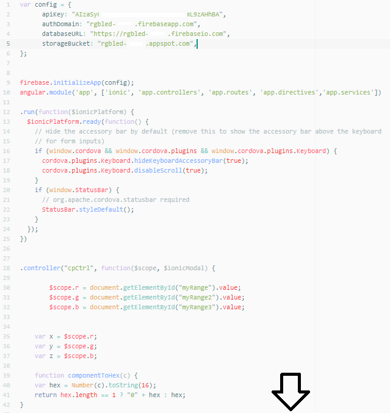
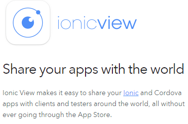
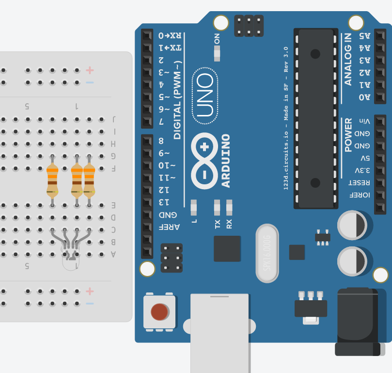
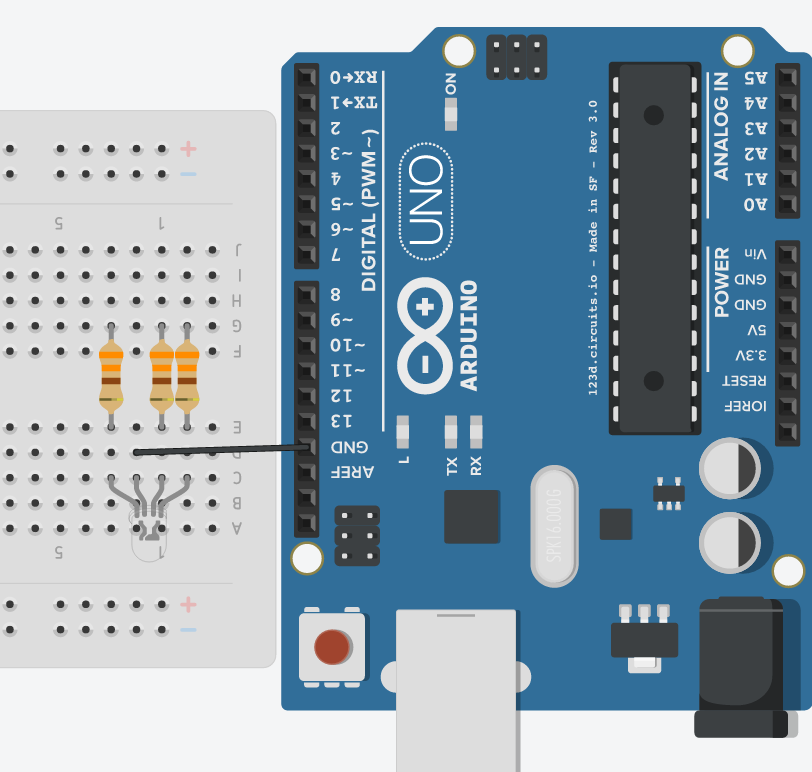

Tutorial Posted on 27/08/2016 By Praveen K (admin)
Introduction

Welcome to what seems to be my first ever written tutorial. I'm sure you all have a microcontrollers and microprocessors lying about and collecting dust. You've used them for your projects and then eventually, you end up leaving them behind. But today I have an amazing project for you all which utlizes electronics that you might just have lying about in your home and the Internet of Things. It is an RGB LED light which you control with a simple mobile app. Keep on reading for the full tutorial and requirements.
Shopping List / Requirements / Things You'll Need
After you've figured it out which subtitle you prefer :), make sure you gather the following. I will be going through what some of them are in the next section.
Electronics
- • 1 Arduino Uno
- • 1 RGB LED (*cathode)
- • 3 330 ohm Resistors
- • An Internet Connected PC running Windows, OS X or Linux
- • 1 USB type A to type B cable to connect the Arduino
- • 1 Breadboard
- • 4 Male to Male Jumper Wires
- Arduino is an open-source prototyping platform based on easy-to-use hardware and software. It is not as powerful as a microprocessor (like the Raspberry Pi) but rather a microcontroller board based on the ATmega328P.
Please note that this tutorial will work with a RGB LED that has an anode but you will have to take some extra steps when plugging it in to your breadboard. I would recommend reading about it here. Also, please
do check your LED's voltage ratings to avoid frying it. Whilst 330 Ohm resitors will work with typical LEDs, not all LEDs are the same.
Software Requirements
(Do not worry about these as we will being installing them in the next step)
- • Node.JS with NPM
- • Ionic, Johnny-Five and Firebase Packages
- • Arduino IDE
- • A Google Firebase Account
Setup: Installing Software
Now, the first thing you want to install is the Arduino IDE. If you've played around with an Arduino before, chances are you'll probably have it installed. But if you don't, click here to download it for your platform.
Once you've installed it, open it up and plug in your Arduino IDE. You want to make sure your Arduino is selected by clicking on the toolbar: Tools followed by Port where you'll want to click on the port that your Arduino is plugged into.
Next, we want to flash
a library to your Arduino. To do that, we can click on (again on the toolbar): File followed by Examples followed by Firmata and finally StandardFirmataPlus.
Once you have done that, just press the upload button and after it has finished you can
unplug your Arduino as we won't be needing it for some time.
The image below shows exactly where StandardFirmataPlus belongs.
Next, you want to install is Node.JS. Node.JS is the heart of our project and manages all the plugins and scripts we will be running later in the project.
To download it for Windows and Mac, click here.
If you are on Linux, then run the following command inside
your terminal.
sudo apt-get install nodejs npm
To verify that you have installed Node.JS with NPM, open up a new terminal/ command prompt window and type in the follow commands.
node -v
npm -v
For more details, including information on troubleshooting, please see the GitHub wiki page here.
Installing Node.js Packages
Now that we have installed Node.js, we can install 2 packages with the npm utility. First, open up an elevated terminal/ command prompt windows and type in the following commands (make sure to add sudo if you are on Linux):
npm install -g johnny-five ionic
If you encounter any errors during your installation, try to Google them first. If you can't get anywhere then leave a comment down below and I will try to address it. Also, make sure you are running the command as an admin!
Setting up Firebase
Before we start, let me talk to you about Firebase. For those who don't know, Firebase is essentially a backend for mobile apps and websites. It is extremely useful when it comes to hosting data, user logins or databases. Firebase has built in frameworks designed for many platforms including modern day mobile platforms like iOS and Android. For this project, we will be utilizing Firebase's database to host the current RGB value of our LED in the internet in realtime. Firebase has a free basic plan which is enough for now and the great thing about it, is the fact that it is integrated with normal Google accounts.
To start off with, click here to visit the Firebase page.
Then log into Firebase with your Google account (create one if you haven't got one here) by clicking on "Go to console" as shown below. You can then sign in with your Google account.
Next, click on "Create new project". Then enter in your own Project name and the country/ reigon you live in.
Once you completed this step, you'll be taken to the dashboard which is the main panel of your Firebase project. We don't need it now but just make sure to keep this tab open as we will be needing it later.
Getting our Node Script Ready
Alright, now that we've finished our installations, we can get onto some real coding. Don't worry though as we will only be changing a few lines and I'll guide you through the whole way.
Firstly, we need to download my code. You can either clone this Git repository or
download and extract the zip file here.
Once, you have extracted or cloned the files, navigate into the Node Files folder and with your favourite code editor, open the Index.js file.
It should look something like this:
Ignore all the lines of code apart from "Line 17" where it reads firebase.initializeApp({databaseURL: 'YOUR CUSTOM FIREBASE URL HERE', This is line you want to change with your own details.
To do this, you need to go back to the
with the Firebase dashboard. Then click the third option of the top menu where it says Add Firebase to your web app. A menu will pop up like the following except with your own Firebase details.
Copy exactly what is circuled in the picture above including the quotes and the comma but not anything before or after the green portion on that line!
Then, swap back to your code editor and remove only from line 17: 'YOUR CUSTOM FIREBASE URL HERE',
Again including
the comma and single quotes.
Then paste in what you have just copied in the exact same place as the line we have just removed. It should look like this:
That's the Internet side of things completed! But once again, make sure to keep the Firebase dashboard open again! Now all that's left is the app!
Setting up our Mobile App
The first step is to go back to the root directory of the extracted files. Now we need to go inside the rgbLED folder. This is our app folder. Don't worry about all the complex files and subdirectories, we only need to change one file.
Go into the www folder followed
by the js folder and with your favourite code editor open the app.js file.
It will look like this:
Don't be overwhelmed by all this code. We only need to change Line 2. To start off with, delete Line 2 leaving nothing but just the line.
Then go back to Firebase Dashboard and click on "Add Firebase to your web app" again if you closed it last time.
This time we need
to copy the four lines highlighted below. Include everything on these four lines like the symbols, black text and green text.
Then go back to your code editor and paste in the copied text into Line 2 of "app.js". As you will see, the code will run over the lines. But don't worry about that. Make sure it looks like this:

Save it and our app is ready. If you want to test it in your browser, open a new command prompt/ terminal window and enter the following command at the root directory of the app (which was were we could see all the complicated files and folders like hooks and www):
ionic serve -p 8080
Then open up your browser and type in localhost:8080. You should see your app. If it doesn't load, then make sure you have port 8080 open. For any help, simply Google about localhost port forwarding.
Now, we can view our app.
Viewing on your Devices
We have two options to build the app for our devices. One is extremely easy and another is slightly harder but it will have the look of an actual single app.
To build the app with the first method continue reading, but if you want to package this app for iOS or Android, click here for a tutorial on doing so.
Now the other way is view your app on iOS and Android, is to use a free app called Ionic View from the App Store/ Play Store.

Once it is installed it, open it up
and click on Sign Up to create an Ionic account.
Then, open your command prompt/ terminal window again and at the root directory of the app, enter the following command:
ionic upload
TIP: If you ecounter an error with an invalid session, enter ionic login and sign in with your credentials; then repeat the above step.
This will prompt you to sign in with the Ionic account you just created. Enter in the details and wait for it to upload your app to the cloud.
Once it has finsihed, go back to your phone and swipe down to refresh the Ionic View app. Your app should pop up. Now tap on it and press download.
Once it has finished, you can tap on View app and the app should load just like it would if it was packaged.
Final Step: Setting Up Our Board!
Now it is time for one of the funnest steps: preparing our board.
Follow these schematics and captions and copy out the breadboard layout.
This was my setup for an LED with a Cathode. If you have an anode, check this link.

Step One: Connect the RGB LED to the board as shown. Take note of the longest leg of the diode, this is the Common Cathode.
Then, connect the three resistors to each leg of the board leaving out the leg with the Common Cathode.

Step Two: Connect one of the male to male jumper wires to the Common Cathode and to Ground on the Arduino Board.
Step Three: Connect the rest of the male to male jumper wires to the other legs and to the following pins:
- • Red = PWM Pin 5
- • Green = PWM Pin 6
- • Blue = PWM Pin 3
If you're not sure which leg corresponds to which colour, try connecting the jumper wire of each leg to the 5V supply pin to determine which colour it is.
Otherwise that is it for setting up the board!
Running!
If you managed to keep up with me up to this point, I'm sure you will be happy to know that we can now finally test our project!
To test your RGB LED, plug in your Arduino into your computer.
Now open a command prompt/ terminal window and navigate
inside the Node Files folder from our extracted/ cloned folders.
Now run the command (with sudo for Linux):
node Index.js
Don't own a device? Well you can still play around the LED in the same way as we tested the mobile app in our browser before.
Simply run the following command and visit localhost:8080 on the same device!
ionic serve -p 8080
That is it! Open up the mobile app and play around with the slider or choose the colour presets. Your LED should hopefully change colour!
Thanks for reading my first ever written tutorial. If you liked it, please do give a like down below!
Also, if you have any queries or problems, make sure to leave a comment with the box provided below.
Thank You! ~Praveen K